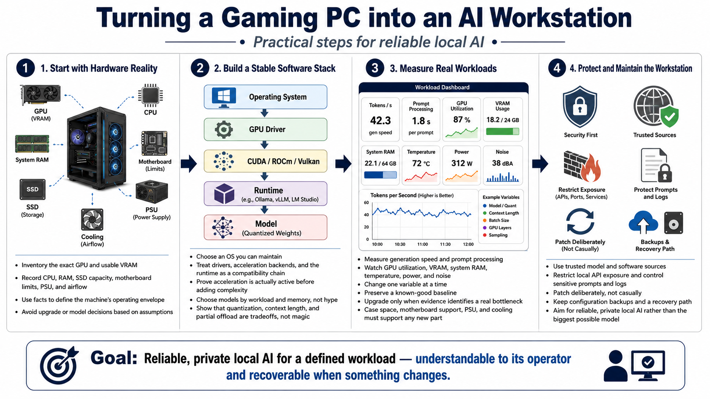

Course Summary and Key Takeaways
Connecting to LMS... Progress: in progress

Narration
A gaming PC becomes a capable AI workstation through deliberate configuration, not through a single installation or expensive upgrade. Begin with an exact inventory of the GPU, VRAM, CPU, system RAM, storage, motherboard, power supply, and cooling. Those facts establish the machine's operating envelope and prevent model or hardware choices based on assumptions.
Select an operating system that you can maintain and that supports the intended acceleration path. Treat GPU drivers, CUDA, ROCm, Vulkan, and the selected runtime as a compatibility chain. Prove that acceleration is active with a simple setup before adding interfaces and orchestration. Then choose models by workload and available memory. Quantization, context length, and partial offload are engineering tradeoffs, not magic ways to erase resource limits.
Measure real tasks. Generation speed, prompt processing, GPU utilization, VRAM, system RAM, temperature, power, and noise together describe the user experience. Change one variable at a time and preserve a known-good baseline. Upgrade only when evidence identifies a clear bottleneck and the proposed part can be supported by the case, motherboard, power supply, and cooling system.
Finally, protect the workstation. Use trusted model and software sources, restrict API exposure, control sensitive prompts and logs, patch deliberately, and keep configuration backups. The goal is not to run the biggest available model or assemble the most complicated stack. The goal is reliable, private local AI that serves a defined workload, remains understandable to its operator, and can be recovered when something changes.